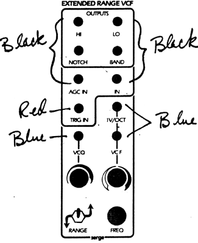
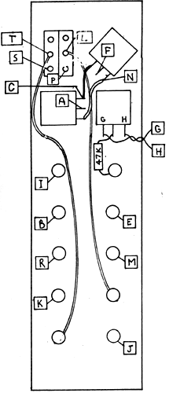

|

Extended Range VC FilterParts for Kit
 The wires that go to pads G and H should be twisted loosely together. The wires that go to pads L and P and the wires to pads T and S should also be loosely twisted together. The placement of these wires is important for quiet operation. Keep all wires as short as possible, and avoid having wires from this module straying over onto adjacent circuit boards. Turn the switch to the UP position. Apply a sawtooth wave from an oscillator into the IN jack. Manually turn the FREQUENCY knob then the 0 knob. Filter sweeps of varying resonance should be heard at the LO, HI and BAND outputs. Using a control voltage, check the VCF and VCQ functions. Check the 1V/OCT input to see that it will track the frequency of an oscillator when they are both controlled by the same control voltage through their 1V/OCT inputs. Remove the sawtooth wave from the IN jack and connect it to the AGC IN jack. With low Q settings, the two inputs should be about the same, but as Q is increased, the gain through the AGC IN is kept constant for the fundamental frequency, to compensate for the peaked response when the Q is high. The overall effect with a complex input signal, is that the total gain will decrease (to keep the gain constant at the high 'Q' for the fundamental frequency). The NOTCH output will produce a phasing type of sound if a sawtooth wave or a noise source is applied to the VCFQ input and the Q is reduced to minimum. Manually sweep the FREQUENCY and note the phase type sound. Apply a pulse source to the TRIG jack with no other signals applied to the filter. A percussive timbre should be heard at the output which can be controlled by the Q and the FREQUENCY knob. The Q setting will affect the decay time, and the FREQUENCY knob will control the pitch. Check for proper operation with the switch in the DOWN position. This extends the range of the filter into the sub-audio range. The filter may now be used to filter low-frequency control voltages. Triggers applied to the TRIG in will cause the filter to go into damped low frequency oscillations, controlled by the Q and the filter's FREQUENCY. Adjustments for the 1 volt per octave tracking fo the VCFX can be made with the trimmer near the top of the PC board. This is marked '100', and is near the 'J' pad. The other trimmers are for control voltage rejection and should not need to be changed unless the sub-modules on the PC board are replaced.
|